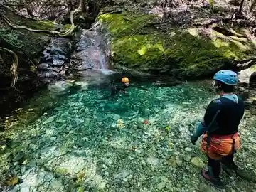
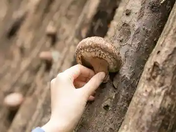
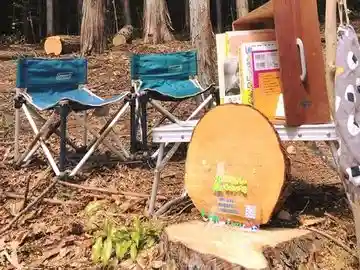
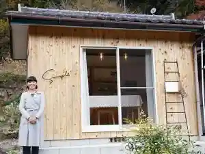

asobibito Asobi Nin
Toei, Aichi · 090-6935-9426 · Official / source link

Toho En
Toei, Aichi · 0536-76-1151 · Official / source link

Chiisa Nakurashito Sotoasobi
Toei, Aichi · Official / source link

Simple⁺
Toei, Aichi · 070-9185-5850 · Official / source link

Hanamatsuri Hall
Toei, Aichi · 0536-76-1266 · Official / source link
Toei Nippon'ichi no Ayu
Toei, Aichi · 0536-76-0530 · Official / source link
Toei Koryu Sokushin Center Chiyo Hime So
Toei, Aichi · 0536-76-0489 · Official / source link
Mikawa Otobirejji
Toei, Aichi · 0536-76-1688 · Official / source link
Okumikawa Koyo Sono
Toei, Aichi · 0536-76-0337 · Official / source link
Sutaforesuto Misono
Toei, Aichi · 0536-76-0687 · Official / source link
Toei Onsen Hana Festival Baths
Toei, Aichi · 0536-77-0268 · Official / source link
naori Minerarufandeshon Tsukuri Experience
Toei, Aichi · 0536-78-5102 · Official / source link
Nie Fuchi Pottohoru
Toei, Aichi · 0536-76-0502 · Official / source link
no Ki Sangaku Ko
Toei, Aichi · 0536-76-1722 · Official / source link
Tsuta no Fuchi (Furikusa Gorge) Furikusa Kawa
Toei, Aichi · 0536-76-1780 · Official / source link